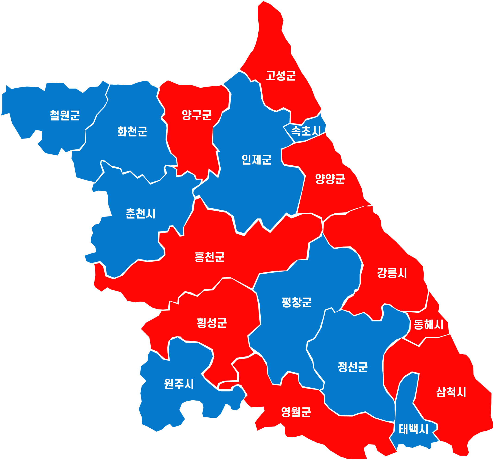

4선 국회의원 · 전 원내대표
현 강원특별자치도지사 (수성 도전)
20대 대선 보수 싹쓸이 지형이 21대 대선(조기)에서 춘천·원주를 민주당에 내주며 정치적 균열 발생. 도시 지역의 '정권 심판' 정서가 2026년까지 유지되는 흐름 반영.
영동 지역(강릉·삼척)의 보수 결집 관성을 시뮬레이션에 30% 반영. 김진태 후보의 조직력과 현직 프리미엄이 고령층 투표율과 결합된 '상쇄 기제'를 분석함.
수적으로는 18개 시군 중 국힘 우세지가 10곳으로 더 많으나, 강원 인구의 45%가 집중된 **춘천(55.2%)과 원주(56.5%)**의 압도적 격차가 전체 승리를 견인함.
| 분야 | 우상호 (더불어민주당) | 김진태 (국민의힘) |
|---|---|---|
| 경제·첨단 | AI 데이터센터 유치, 반도체 교육 클러스터, 청정에너지 고속도로 | 120개 미래산업 프로젝트 완수, 소상공인 자금 지원 2배 확대 |
| 복지·민생 | 청년 공공주거 1만호 공급, '그냥 해드림 센터' 노인 밀착 지원 | 강원형 4대 도민연금 도입, 육아용품 반값 지원 전국 확대 |
| 문화·관광 | 글로벌 케이팝 밸리 조성, 사계절 세계적 복합 관광단지 구축 | 오색케이블카 조기 완공, 반려견과 여행하기 좋은 도시 조성 |
| 환경·에너지 | 강원권 수소 에너지 벨트화, 민통선 북상을 통한 부지 확보 | 바람·햇빛연금(수익 공유) 도입, 미래에너지 집적단지 육성 |
| 교육·청년 | 산업 연계형 인재 양성 특성화고 추진, 청년 창업 펀드 조성 | 대학생 무상교육 전면 실시, 반도체 인력 양성 사업 확대 |
| 시·군명 | 8회 지선 | 21대 대선 | 26지선 예상 |
|---|

제21대 대통령 선거에서 확인된 '강원도의 야권 회귀' 흐름이 이번 지방선거에서 완전히 정착될 전망입니다. 춘천(55.2%)과 원주(56.5%)를 포함한 인구 밀집 지역의 압도적 지지세가 영동권 보수 결집을 상쇄하며, **더불어민주당 우상호 후보의 당선**이 유력합니다.